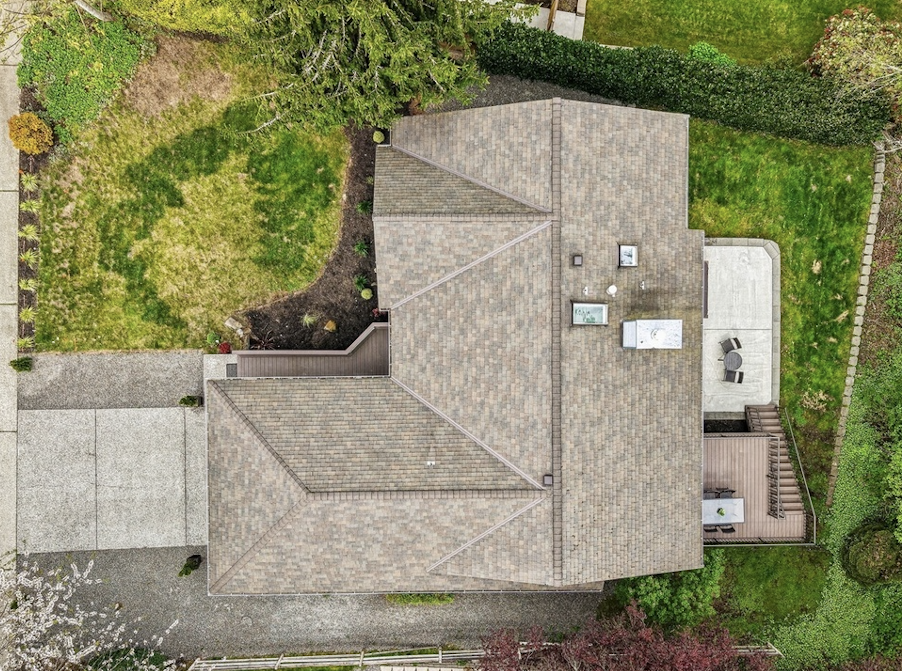

Outside
Your outdoor lights, at a glance.

The aerial photo could not load. You can still use the light controls below.
Aerial photo: Redfin / NWMLS. Light marker positions are approximate.
Loading Nathan’s home…
NATHAN’S HOME · LIVE IN 3D
Drag to explore · Scroll to move closer